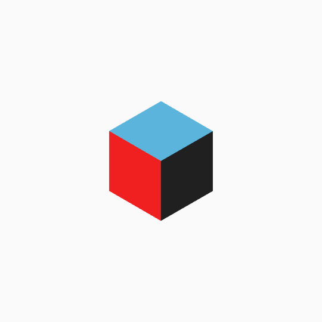
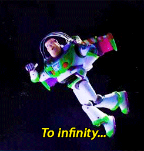
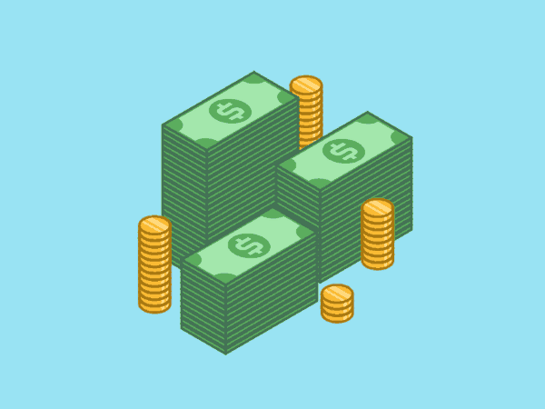

Forming a new Fund
supporting individual growth and exploration

Inception#
As with most ideas, there were some building block experiences to this idea.
The Basis
Back in January, I watched a friend’s Snapchat story in awe as he posted videos from CES 2018 (a major consumer electronics conference). Later that day, as I took my usual mental break and went to the Student Center to chat with some bros, CES came up in conversation.
Aside from discussing some of the most random things we’d read about, we considered how cool it’d be to actually go to Vegas and check out CES ourselves. Except that we couldn’t all just drop cash like that. But what if we could get it subsidized? After all, we get reimbursed for organizational conferences/events and have scholarships for academic conferences — why not subsidies for these industry conferences and events?
The Potential
Shortly after I was elected and installed as Vice President of Finance, I began to wrap loose ends up for the Spring 2018 semester. As I approached closing the budget, I realized we had a larger than usual surplus — by almost 2x.
Rather than engage in the precarious practice of rolling over a surplus to the next budget, which creates an unreliable dependency, I wanted to find a sustainable way to funnel this money back into the brotherhood.
Obvious possibilities included adding it to our investments fund or putting it into savings, but conversations with Brothers (shoutout to former VPF @aashaldave) encouraged me to think past that. A few proposed using it to send Brothers to conferences, but I had something a bit broader in mind.
Value-Based Thinking#

The aspect of brothers’ ambition we want to support
As you may see reflected in the outline for the Special Projects Fund, the goal is to fund ventures that:
- Promote Professional Growth
- Reward Proactivity
- Encourage Exploration
- Further Brothers’ Growth
As you may note, conferences and events are just one way of possibly fulfilling these goals. Hence I expanded this fund to accommodate projects and ventures at large, reflecting what I truly wanted to accomplish.
Growth and Sustainability#
Fortunately, I’ve been able to build out the logistical aspect of this fund. As we begin to receive applications, however, one question becomes apparent: how does one prevent its depletion?

Consistent Deposits
With the Spring 2018 surplus establishing a precedent, the expectation is that every surplus henceforth will serve as a contribution to this fund.
Continued Growth
As the funds sit around waiting for worthy applications, they should be able to grow! Investing involves risk, so I worked with my Investments team to come up with a balanced strategy that keeps our fund growing.
Allocations
As with every pool of money, bounds of use need to be set. After some investigation, I decided to keep 35–40% of our initial fund liquid for the next semester, while investing the rest for the future. This will likely change as we find out what a typical flow of applications and ideas looks like.
Impact#
My goal with this is to help make some cool things happen, and to learn and grow from other people’s experiences. Hopefully even do something cool myself down the road. We’ll see what’s to come! Thanks GTAKPsi for the opportunities. And as usual, thanks for reading!